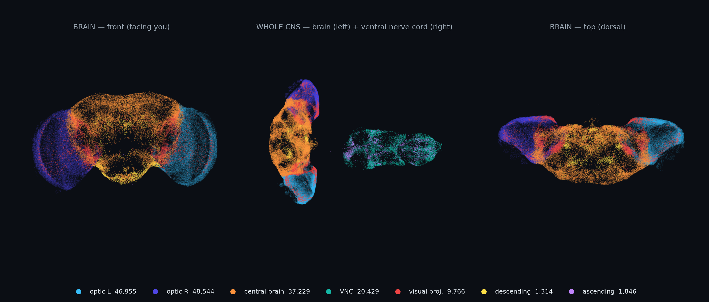
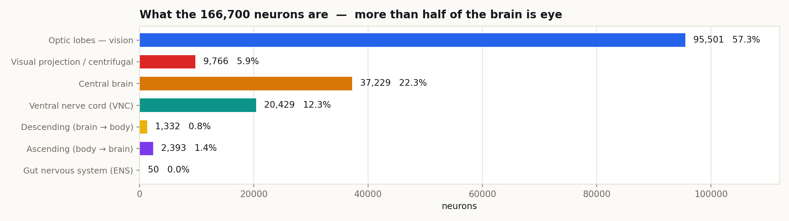
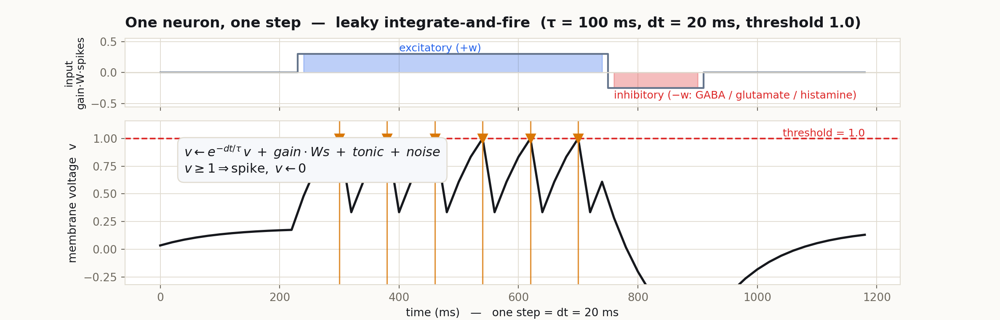
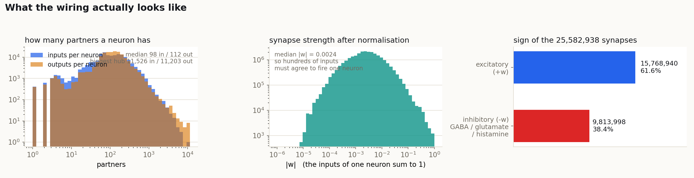
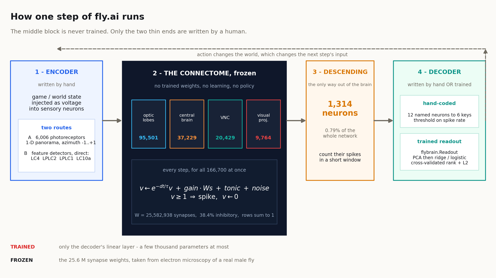
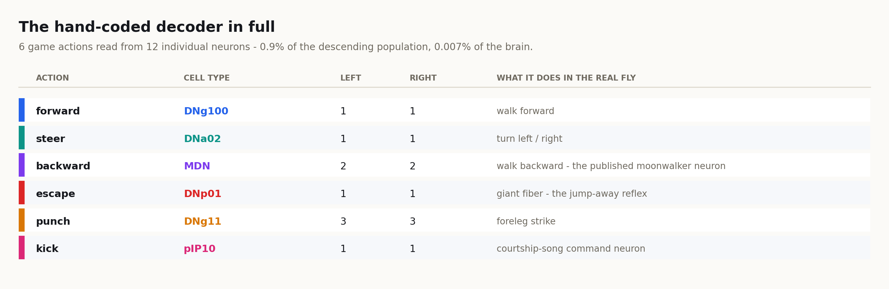
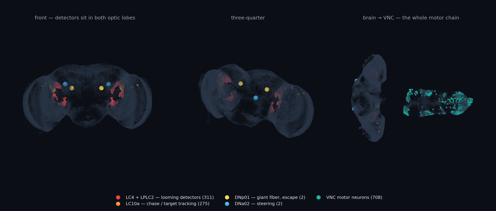
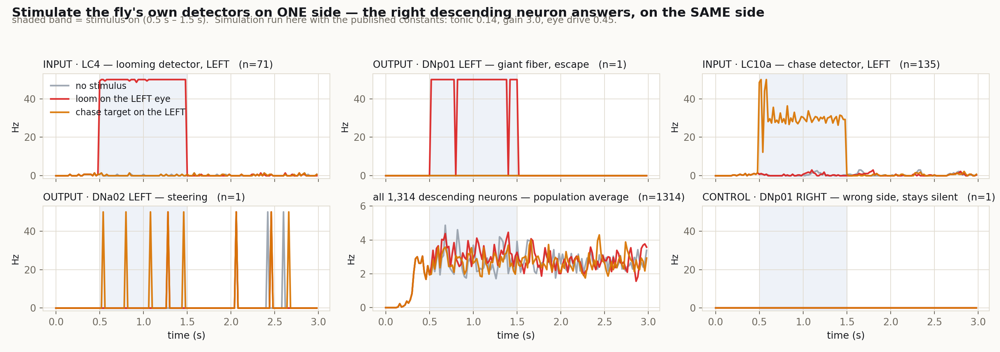

นักวิทยาศาสตร์ที่ Janelia (HHMI) ฝานสมองแมลงวันผู้ทั้งตัวด้วยกล้องจุลทรรศน์อิเล็กตรอน แล้วไล่ตามเส้นใยประสาททุกเส้นจนได้แผนที่ว่า เซลล์ไหนต่อกับเซลล์ไหน และต่อกันกี่จุด ชุดข้อมูลนั้นชื่อ MaleCNS v1.0 เปิดให้ใช้ฟรีภายใต้สัญญา CC BY 4.0
fly.ai เอาแผนที่นั้นมาใส่สมการไฟฟ้าง่าย ๆ ตัวหนึ่ง แล้วปล่อยให้มันทำงาน ไม่มีการเทรน ไม่มี gradient descent ไม่มี policy พฤติกรรมทุกอย่างที่โผล่ออกมา มาจากรูปทรงของสายไฟล้วน ๆ
สิ่งที่ถูกเทรนในโปรเจกต์นี้มีแค่ ชั้น linear บาง ๆ ที่ปลายทาง สำหรับแปลงการยิงสัญญาณเป็นปุ่มกด ส่วนตัวสมอง 25.6 ล้านเส้นเชื่อมนั้นถูกแช่แข็งไว้ ไม่เคยขยับ นี่คือเทคนิคที่เรียกว่า reservoir computing
แมลงวันทองผู้หนึ่งตัว ถูกฝานเป็นชั้นบาง ๆ แล้วถ่ายด้วยกล้องจุลทรรศน์อิเล็กตรอน ทีม FlyEM ไล่ตามเส้นใยทุกเส้นและระบุตำแหน่ง synapse ได้ผลลัพธ์เป็น MaleCNS v1.0
body-annotations
body-neurotransmitters
connectome-weights
min-confidence 0.5
จำนวน synapse ดิบถูกใส่เครื่องหมายตามสารสื่อประสาทที่ทำนายไว้ ถ้าเป็น GABA, glutamate หรือ histamine จะได้เครื่องหมายลบ (ยับยั้ง) นอกนั้นเป็นบวก (กระตุ้น)
จากนั้นหารด้วยผลรวมขาเข้าของเซลล์ปลายทาง เพื่อให้ทุกเซลล์มีงบ input เท่ากันที่ 1.0
# build.py
w = w_raw * sign[pre]
w /= max(incoming[post], 1.0)
| brain.npz | 53 MB |
| รหัสเซลล์ · ชนิดเซลล์ · ซ้าย/ขวา · พิกัด 3 มิติ · กลุ่มอ่านค่า · ผังตา | |
| weights.npz | 205 MB |
| เมทริกซ์ sparse CSR แถว = เซลล์ปลายทาง คอลัมน์ = เซลล์ต้นทาง | |
ผลรวมค่าสัมบูรณ์ของแต่ละแถวเท่ากับ 1.000 พอดีใน 99.8% ของเซลล์ ยืนยันว่าการนอร์มัลไลซ์ทำที่ฝั่งขาเข้าจริง
| เซลล์ทั้งหมด | 166,700 | ชื่อชนิดเซลล์ที่ไม่ซ้ำกัน 11,862 ชนิด |
| ซีกซ้าย / ซีกขวา | 81,823 / 83,935 | กลางลำตัว 392 · ไม่ระบุ 550 |
| มีพิกัด 3 มิติ | 140,638 | 84.4% ของทั้งหมด ที่เหลือส่วนใหญ่เป็นเซลล์รับสัมผัส |
| จุดเชื่อมต่อ | 25,582,938 | กระตุ้น 15,768,940 · ยับยั้ง 9,813,998 |
ข้อมูล connectome เปิดสาธารณะภายใต้ CC BY 4.0 โดย FlyEM / HHMI Janelia ส่วนโค้ดของ fly.ai เองเป็น MIT แปลว่าใช้ต่อยอดเชิงพาณิชย์ได้ ขอแค่ให้เครดิต
ดาวน์โหลดสมองสำเร็จรูปได้เลยด้วย flybrain download ราว 260 MB ครั้งเดียวจบ

แต่ละจุดคือเซลล์หนึ่งตัว วาดที่พิกัดที่วัดได้จริงจากตัวอย่าง EM ไม่ได้จัดวางใหม่เพื่อความสวยงาม เซลล์ที่ไม่มีพิกัด 26,062 ตัวจึงไม่ปรากฏในภาพ
กลีบตาซ้ายและขวาแยกกันเกือบสมบูรณ์ ข้างละราว 41,000 เซลล์ การแยกนี้สำคัญมาก เพราะเป็นเหตุผลว่าทำไมการกระตุ้นข้างเดียวจึงได้คำตอบข้างเดียว
ช่องว่างระหว่างสมองกับ VNC ในภาพกลาง คือจุดที่ทุกคำสั่งต้องบีบผ่านสายเพียง 1,314 เส้น เทียบกับเซลล์ 166,700 ตัวที่อยู่สองฝั่ง

| ส่วน | จำนวน | ทำอะไร |
|---|---|---|
| กลีบตา optic lobes | 95,501 | ประมวลผลภาพชั้นต้น ซ้ายและขวาแยกกันเกือบสมบูรณ์ ข้างละราว 41,000 เซลล์ |
| สมองส่วนกลาง central brain | 37,229 | รวมข้อมูลทุกประสาทสัมผัส ตัดสินใจ ความจำ การนำทาง |
| ไขสันหลัง VNC | 20,429 | วงจรคุมขา 6 ขาและปีก มีเซลล์สั่งกล้ามเนื้อโดยตรง 708 ตัว |
| เซลล์ส่งภาพเข้าสมอง visual projection | 9,766 | สายที่ลากจากกลีบตาเข้าสมองกลาง กลุ่ม LC / LPLC อยู่ตรงนี้ |
| ขาลง descending | 1,332 | ทางออกเดียวจากสมองไปสู่ร่างกาย |
| ขาขึ้น ascending | 2,393 | ส่งสถานะร่างกายกลับขึ้นสมอง |
| ระบบประสาทลำไส้ ENS | 50 | คุมทางเดินอาหาร ไม่ถูกใช้ในเดโมใด ๆ |
57% ของสมองแมลงวันคือระบบการมองเห็น (กลีบตา + สายส่งภาพ) ส่วนที่เรามักเรียกว่า “คิด” มีแค่ 37,229 เซลล์
นี่คือเหตุผลว่าทำไมเดโมทุกตัวของ fly.ai จึงเป็นงานที่ป้อนภาพเข้าไป ถ้าจะใช้สมองนี้กับงานที่ไม่ใช่การมองเห็น เท่ากับทิ้งเนื้อสมองไปครึ่งหนึ่ง
| ชนิด | จำนวน | ตอบสนองต่อ |
|---|---|---|
| LPLC2 | 185 | วัตถุขยายตัว = กำลังพุ่งเข้าหา |
| LC4 | 126 | ภัยคุกคามที่มาเร็วและใกล้ |
| LPLC1 | 134 | วัตถุเล็กที่เข้าใกล้ เช่น กระสุน |
| LC10a | 275 | ตามเป้าหมายที่เคลื่อนที่ ใช้ตอนไล่จีบตัวเมีย |

e^(−dt/τ)·v — แรงดันเดิมรั่วทิ้งไปเรื่อย ๆ ที่ dt 20 ms และ τ 100 ms เหลือ 81.9% ของก้าวก่อน ถ้าไม่มีอะไรเข้ามา มันจะค่อย ๆ ลืม
gain·W·s — รับสัญญาณจากเพื่อนที่ยิงในก้าวที่แล้ว W คือสายไฟจริง s คือเวกเตอร์ 0/1 ว่าใครยิงบ้าง
tonic + noise — แรงดันพื้นฐานคงที่ บวกโอกาส 1.2 Hz ที่จะได้แรงดันแถม 0.22 สัญญาณรบกวนนี้คือสิ่งเดียวที่ทำให้แมลงวันสองตัวซึ่งมีสายไฟเหมือนกันเป๊ะ ทำตัวไม่เหมือนกัน
พอ v ≥ 1.0 เซลล์ยิงหนึ่งครั้งแล้วรีเซ็ตเป็นศูนย์ อัตราการยิงสูงสุดจึงเท่ากับ 50 Hz พอดี เพราะยิงได้มากที่สุดก้าวละครั้ง
ทีมผู้พัฒนาระบุตรง ๆ ว่าค่าพวกนี้ ตั้งด้วยมือ ไม่ได้วัดจากแมลงวันจริง
| ค่า | ตั้งไว้ | ความหมาย |
|---|---|---|
| dt | 0.020 s | หนึ่งก้าว = 20 ms จึงได้ 50 ก้าว/วินาที |
| tau | 0.100 s | ค่าคงที่การรั่วของเยื่อหุ้มเซลล์ |
| gain | 3.0 | ตัวคูณสัญญาณที่รับจากเพื่อน |
| tonic | 0.14 | แรงดันพื้นฐาน ปรับอัตโนมัติถ้าเปลี่ยน dt |
| noise_hz / amp | 1.2 / 0.22 | ความถี่และขนาดของแรงดันสุ่ม |
| eye_gain | 0.62 | ตัวคูณสัญญาณจากตา |
| threshold | 1.0 | ถึงเมื่อไหร่ ยิงเมื่อนั้น แล้วรีเซ็ตเป็น 0 |
คู่ tonic 0.14 / gain 3.0 ถูกเลือกมาเพราะทำให้ descending neurons เงียบตอนพัก แต่สัญญาณจาก LC4 ยังวิ่งทะลุถึงได้ ถ้าใช้ tonic 0.18 / gain 1.5 ทั้งเครือข่ายจะจอดค้างที่ระดับ threshold พอดีและยิงรัวตลอดเวลา

น้ำหนักกลางอยู่ที่ 0.0024 ขณะที่เซลล์ต้องสะสมให้ถึง 1.0 ถึงจะยิง แปลว่าต้องมีเพื่อนหลายร้อยตัวเห็นตรงกันในเวลาไล่เลี่ยกัน สัญญาณเดี่ยว ๆ ไม่มีทางผลักใครให้ยิงได้
เซลล์ทั่วไปมีเพื่อนขาเข้า 112 ตัว ขาออก 98 ตัว แต่ฮับที่ใหญ่ที่สุดคือ CT1 มีขาออกถึง 11,526 เส้น เซลล์ประเภทนี้ทำหน้าที่คุมระดับสัญญาณรวมของทั้งกลีบตา
38.4% ของเส้นเชื่อมมีเครื่องหมายลบ นี่คือเหตุผลที่เครือข่ายไม่ระเบิดเป็นไฟลุกทั้งก้อน แต่ก็เป็นสาเหตุที่การกระตุ้นแรง ๆ มักถูกกลบจนไม่เหลืออะไรที่ปลายทาง
การนอร์มัลไลซ์ทำให้ “งบขาเข้า” ของทุกเซลล์เท่ากันที่ 1.0 ซึ่งสะดวกสำหรับการจำลอง แต่ไม่ใช่ความจริงทางชีววิทยา เซลล์จริงมีขนาด ความต้านทาน และความไวต่างกันมาก โมเดลนี้ตัดทั้งหมดนั้นทิ้งเพื่อแลกกับความเร็ว

มีสองเส้นทางให้เลือก
ก. ผ่านตาจริง — ภาพถูกย่อเป็นแถบพาโนรามา 1 มิติ ฉายลงบนเซลล์รับแสง 6,006 ตัว แต่ละตัวมีค่ามุม azimuth ตั้งแต่ −1 (ซ้ายสุด) ถึง +1 (ขวาสุด) เรียงตามตำแหน่งจริงในตา
ข. ลัดเข้าเซลล์ตรวจจับโดยตรง — ข้ามชั้นประมวลผลภาพไปเลย ยิงแรงดันเข้า LC4, LPLC2, LPLC1, LC10a ตรง ๆ ตามสิ่งที่เกิดขึ้นในเกม วิธีนี้คือวิธีที่เดโมทุกตัวใช้จริง เพราะเส้นทางผ่าน lamina จะจางหายในโมเดลแบบ spiking
| loom_gain | 10.0 | อัตราการขยายของวัตถุ → แรงดัน |
| shot_gain | 10.0 | กระสุนที่โตขึ้น → แรงดัน |
| chase_base | 0.6 | แรงดันพื้นตอนเห็นเป้า |
| chase_gain | 0.2 | บวกเพิ่มตามขนาดเป้า |
| threat_max | 0.8 | เพดานสัญญาณภัยคุกคาม |
| cap | 0.8 | เพดานแรงดันต่อเฟรม |
สมองแมลงวันคุยกับร่างกายผ่าน descending neurons เท่านั้น มีทั้งหมด 1,314 เส้น หรือ 0.79% ของเครือข่าย นี่คือคอขวดที่แคบที่สุดของทั้งระบบ และเป็นเหตุผลว่าทำไมการอ่านค่าออกมาจึงยาก
fly.ai มีวิธีอ่านสองแบบ
แบบเขียนมือ — เลือกเซลล์ที่รู้หน้าที่แน่ชัด 12 ตัว ตั้ง threshold บนอัตราการยิง แล้วแมปเป็นปุ่ม 6 ปุ่ม ตรงไปตรงมาและไม่ต้องเทรน
แบบเทรน — คลาส flybrain.Readout เก็บร่องรอยการยิงของ descending neurons ทั้ง 1,314 เส้น ลดมิติด้วย PCA แล้ว fit ridge (ค่าต่อเนื่อง) หรือ logistic (ใช่/ไม่ใช่) โดยเลือกอันดับและค่า L2 ด้วย cross-validation
สมองทำหน้าที่เป็นอ่างเก็บสัญญาณที่ซับซ้อนและแช่แข็ง ส่วนที่เรียนรู้คือชั้น linear บาง ๆ ที่อ่านจากอ่างนั้น ข้อดีคือเทรนเร็วมากและไม่มีทางทำให้สมองพัง ข้อเสียคือถ้าอ่างไม่มีข้อมูลที่ต้องการ ต่อให้ readout ดีแค่ไหนก็อ่านไม่เจอ

ไฟล์ brain.npz เก็บดัชนีของเซลล์เหล่านี้ไว้ตรง ๆ ในชื่อ group_forward_L, group_steer_R และอื่น ๆ เมื่อไล่ดัชนีกลับไปหาชนิดเซลล์ จะได้ชื่อที่ตรงกับวรรณกรรมประสาทวิทยาทั้งหมด
DNp01 คือ giant fiber เส้นใยยักษ์ที่มีชื่อเสียงที่สุดในสรีรวิทยาแมลง เป็นตัวสั่งกระโดดหนีเมื่อมีอะไรพุ่งเข้าหา · MDN คือ moonwalker descending neuron ที่ถูกตั้งชื่อตามการทำให้แมลงวันเดินถอยหลัง · pIP10 คือเซลล์สั่งร้องเพลงเกี้ยวพาราสี
การจับคู่ “pIP10 = เตะ” หรือ “DNg11 = ต่อย” เป็นการตัดสินใจของมนุษย์ ไม่ใช่ของแมลงวัน แมลงวันไม่มีเซลล์ที่แปลว่า “ต่อย” เพราะมันไม่ต่อย สิ่งที่โปรเจกต์ทำคือหยิบคำสั่งมอเตอร์ที่ใกล้เคียงที่สุดมาใช้แทน
ยิ่งงานปลายทางห่างจากพฤติกรรมธรรมชาติของแมลงวันเท่าไหร่ การจับคู่แบบนี้ก็ยิ่งเป็นการเดามากขึ้นเท่านั้น

เซลล์ตรวจจับมีหลักร้อย เซลล์สั่งกล้ามเนื้อมี 708 แต่ระหว่างกลางมีเซลล์อีกแสนกว่าตัวที่ไม่ได้อยู่ในเส้นทางนี้เลย เดโมทั้งหมดใช้สมองไปไม่ถึงหนึ่งเปอร์เซ็นต์
จุดเหลืองสองจุดในภาพคือเส้นใยยักษ์ทั้งหมดที่แมลงวันมี หนึ่งเส้นต่อหนึ่งข้าง การตัดสินใจกระโดดหนีทั้งชีวิตของมันฝากไว้กับเซลล์สองตัวนี้
สัญญาณต้องวิ่งจากกลีบตาไปสมองกลาง ลงคอ แล้วเข้า VNC ในโมเดลนี้ทุกก้าวใช้เวลา 20 ms เท่ากันหมด ระยะทางจริงจึงกลายเป็นจำนวนก้าวที่ต้องผ่าน

กระตุ้น LC4 + LPLC2 ข้างซ้าย เซลล์หนีตาย DNp01 ข้างซ้ายพุ่งจาก 0 Hz ไปเป็น 47 Hz ส่วน DNp01 ข้างขวายังคงเป็น 0 Hz สนิทตลอดการทดลอง
กระตุ้น LC10a ข้างซ้าย DNa02 ข้างซ้ายขยับขึ้น ส่วนข้างขวาไม่ขยับ และ DNp01 ไม่ตอบสนองเลย
สัญญาณไม่ได้แค่ “ผ่านไปได้” แต่ผ่านไปถูกเส้น ถูกข้าง และไม่ปนกับเส้นอื่น ทั้งที่ไม่มีใครบอกเครือข่ายว่า LC4 ควรต่อกับ DNp01
ข้อมูลนี้ฝังอยู่ในรูปทรงของสายไฟตั้งแต่ตอนที่แมลงวันตัวนั้นยังมีชีวิต
| ก้าวที่รัน | 150 ก้าว = 3.0 วินาที |
| ช่วงกระตุ้น | 0.5 – 1.5 วินาที |
| ความแรง | 0.8 ต่อก้าว |
| สัญญาณตา | 0.45 คงที่ |
| ความเร็ว | 29–38 ms ต่อก้าว |
รันด้วย scipy เธรดเดียว เทียบกับ 8.9 ms/ก้าว บน CPU 24 เธรดผ่าน Numba และ 1.4 ms/ก้าว บน RTX 4060
บอทเล่นเกมต่อสู้ผ่านเทอร์มินัล สถานะเกมถูกแปลงเป็นการกระตุ้นเซลล์ตรวจจับ 4 ชนิด ในฝั่งที่ตรงกับตำแหน่งคู่ต่อสู้ แล้วอ่านคำสั่งจาก descending neurons
มีแดชบอร์ดแสดงเซลล์ 140,638 ตัวที่มีพิกัด กะพริบตามการยิงจริง
โซเชียลเน็ตเวิร์กที่ผู้ใช้เป็นแมลงวัน โพสต์ถูกสร้างจากกิจกรรมของสมองที่ถอดรหัสออกมา มีทั้งเว็บ React และ worker ฝั่ง Python
สมองสองก้อนสามารถแลกข้อมูลกันผ่านสัญญาณเพลงปีกได้
หุ่นพ่อมด 3 มิติในเบราว์เซอร์ ที่ descending neurons ควบคุมโดยตรง โค้ดอยู่ในโฟลเดอร์ world/ เป็น TypeScript พร้อมข้อมูล connectome 57 MB
รันสมองทั้งก้อนในเบราว์เซอร์ ไม่ต้องมีเซิร์ฟเวอร์
| สิ่งที่วัด | ผลของสมองแมลงวัน | เทียบกับ | ตีความ |
|---|---|---|---|
| ไล่ตามคู่ต่อสู้ ไม่เทรนอะไรเลย |
64% ของการเคลื่อนที่ | สุ่ม = 50% | มาจากวงจรไล่จีบจริง LC10a → DNa02 สายไฟทำงานเองโดยไม่ต้องสอน |
| ไล่ตาม เมื่อรัน 8 ตัวโหวตกัน | 72% | ตัวเดียว = 63% | การโหวตกรองสัญญาณรบกวนทิ้ง เหลือแต่สัญญาณที่สมองทุกก้อนเห็นตรงกัน |
| หลบกระสุน | 22% ของการกระโดด | สุ่ม = 20% | ไม่ได้หลบ มันกระโดดตอนคู่ต่อสู้พุ่งเข้ามา ไม่ใช่ตอนโดนยิง |
| ทำนายว่าหมัดจะเข้า readout ที่เทรนแล้ว |
AUC 0.77 | กฎ “ดูระยะห่าง” = 0.83 | แพ้กฎง่าย ๆ ที่เขียนเองสามบรรทัด |
| ถ้าตัดช่องสัญญาณ looming ออก | AUC 0.555 | สุ่ม = 0.50 | พอตัดทางเข้าที่ตรงกับหน้าที่จริงของเซลล์ ความสามารถหายเกือบหมด สายไฟสำคัญจริง |
| ผลการแข่งสด | ชนะครั้งแรก 1–7 เกม | ก่อนหน้านั้น 0 ชนะ | ตัวแปรชี้ขาดคือ ความหน่วง ไม่ใช่คุณภาพโมเดล — 8 ตัวใช้เวลา 59–70 ms/เฟรม จนเกินงบ พอลดเหลือ 2 ตัวที่ 16–27 ms ก็เริ่มชนะ |
เซลล์รับกลิ่นเกิดการยิงวนลูปไม่หยุดในค่าตั้งต้น ใครที่จะทำงานเกี่ยวกับกลิ่นต้องปิดช่องทางนั้นเองก่อน
ในฐานะ ตัวชนะเกม มันแพ้สคริปต์สั้น ๆ แต่ในฐานะ เครื่องมือทดลอง มันตอบคำถามที่ไม่มีอะไรตอบได้มาก่อน เช่น ถ้าตัดช่องสัญญาณนี้ทิ้ง พฤติกรรมจะหายไปไหม และในฐานะ งานสาธิต มันแสดงให้เห็นชัดว่าโครงสร้างล้วน ๆ โดยไม่ต้องเรียนรู้ ก็ให้พฤติกรรมที่มีทิศทางได้
pip install flybrain
flybrain download # ~260 MB ครั้งเดียว
from flybrain import FlyBrain brain = FlyBrain(device="auto") loom = brain.cells(["LC4", "LPLC2"], side="L") dnp01 = brain.cells(["DNp01"]) for t in range(150): if 25 <= t < 75: brain.stimulate(loom, 0.8) fired = brain.step() # fired คือดัชนีของเซลล์ที่ยิงในก้าวนี้
brain = FlyBrain(batch=8) # สายไฟชุดเดียว 8 ชุดแรงดัน
บน GPU การคูณเมทริกซ์ครั้งเดียวรับใช้ทั้ง 8 ตัว ต้นทุนจึงพอ ๆ กับรัน 1–2 ตัว
| flybrain/ | ตัวจำลอง — brain.py คือลูปหลัก 201 บรรทัด |
| sshfighter/ | บอทเล่นเกม + แดชบอร์ด + ตัวเทรน readout |
| flybook/ | เว็บ React + worker Python + Supabase |
| world/ | โลก 3 มิติ TypeScript พร้อมข้อมูล connectome |
| inject.py | สคริปต์พิสูจน์เส้นทาง LC4 → DNp01 ที่หน้า 11 ทำซ้ำ |
| sweep.py | กวาดค่า tonic/gain เพื่อหาจุดทำงานที่ดี |
| โค้ด | github.com/alextitonis/fly.ai |
| เดโมออนไลน์ | fly-ai-dun.vercel.app |
| ข้อมูล connectome | MaleCNS v1.0 — FlyEM, HHMI Janelia, CC BY 4.0 |
| สัญญาอนุญาตโค้ด | MIT |
ตัวเลขทุกตัวในเอกสารนี้อ่านจาก brain.npz และ weights.npz โดยตรง ไม่ได้คัดลอกจาก README ยกเว้นผลการแข่ง SSH Fighter ในหน้า 12 ซึ่งอ้างตามที่ผู้พัฒนารายงานไว้